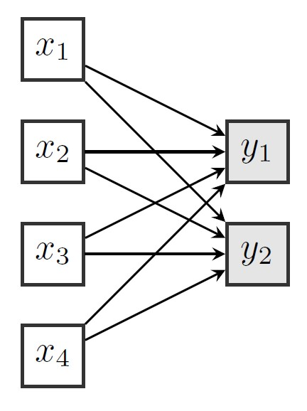
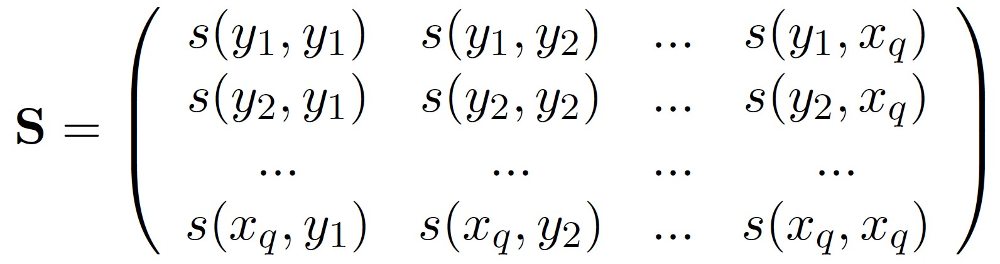
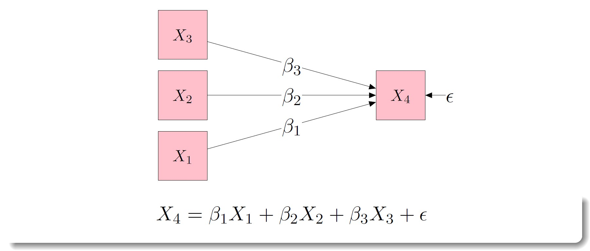
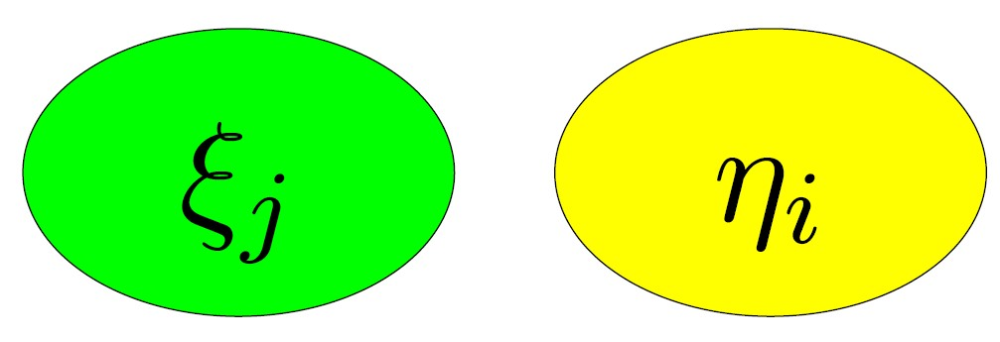
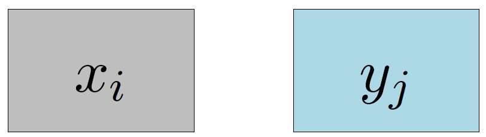
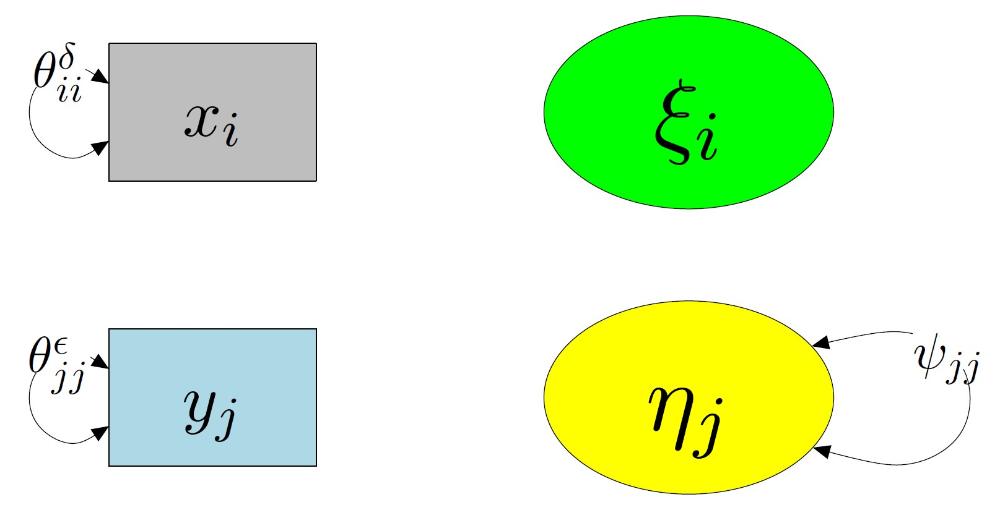
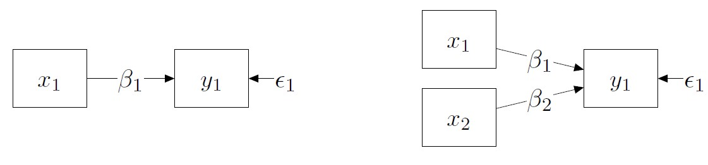
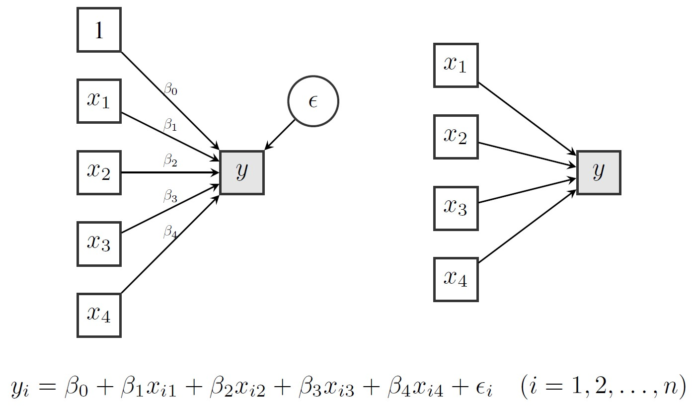

Today: SEM language + diagram grammar + the workflow, then first translation to lavaan. Next (02): path analysis & mediation (indirect effects, equivalence, interpretation).
Learning objectives
By the end of this session you should be able to:
Translate a verbal hypothesis into a diagram
Use the basic SEM “grammar” (variables, errors, arrows, covariances)
Explain the SEM workflow: Specify → Identify → Estimate → Evaluate → Revise/Report
Write and run a minimal model in lavaan (and read the key parts of the output)
A quick motivation: “how do you fit these?”

SEM = Structural Equation Modeling
A family of models that lets you:
represent hypotheses as a system of relations
we postulate a data-generating model
we evaluate whether this model fits the data or not
work with measurement error (explicitly)
model means and covariances implied by your theory
it includes path-analysis, causal models, factorial models, measurement models, Latent Growth Models, but even simple multiple regression or ANOVA could be considered particular cases of SEM. Most things you already do (t-tests, regressions, ANOVA) are special cases of SEM.
What is so special about SEM?
we can model latent variables (e.g., ‘invisible constructs’)
we can test indirect and reciprocal effects and more
we can make diagrams (or PAINTINGS if theory is weak!)
THE MAIN AIM OF SEM IS TO RECONSTRUCT THE TRUE VARIANCE-COVARIANCE MATRIX
Variance–covariance matrices (the “currency”)
SEM compares what you observe (S) with what your model implies (Σ(θ)).

(We’ll keep the math light today; we’ll return to fit evaluation later.)
Classification of variables
Variables are the way those attributes that vary across individuals are operationalized and represented for further data processing. These can be categorized according to many criteria (e.g, dependent/independent…), but in SEM we classify them firstly as:
Latent variables
hypothetical variables that correspond to more or less abstract concepts
formative or reflective
examples are intelligence, anxiety, executive functions, personality traits…
Observed variables
variables that can be directly observed and measured
examples can be weight, height, gender, income…
Classification of variables
In SEM we also have an additional type of classification:
Exogenous variables
Variables whose causes lie outside the model; they will be used only as predictors in the model. They do not receive arrows.
They are indicated with \(x\), if observed, or with \(\xi\), if latent.
Endogenous variables
Variables that are determined by variables within the model (they receive arrows); can be used as predictors or dependent variables in the model.
They are indicated with \(y\), if observed, or with \(\eta\), if latent.
Relationships between variables
The general aim of statistical analysis is to study relationship among variables
On the basis of the relationship among the variables, we distinguish two kind of models: symmetrical and asymmetrical.
Asymmetrical relationships
X -> Y
Variables are divided into two sets: dependent or response variables and predictors or explanatory variables
X is the set of explanatory variables, \(Y\) is the set of response variables, arrows represents the direction of the hypothesized relationship.
These models imply cause-and-effect relationships.
Example
People who study more obtain higher grades.
Symmetrical relationships
\[
X_i \Leftrightarrow Y_j \quad \forall i,j
\]
This means that neither a variable causes the other, neither a variable can be considered prior in time to the other; all these relationships are bidirectional.
These models do not imply nor consider causality.
Example
People who have higher grades in math have higher grades in art.
Regression model
Asymmetrical relationships are usually tested with regressions!
As you remember, regression models can be written, using classical formulation, as the expression below and graphically depicted (getting closer to SEM) like this:

More regression?
But what if we have in mind a more complex pattern of relationships? What if we have more regression models in mind and need to estimate all of them contemporarily?
What we need is a system of equations.
More regression?
This system can also be drawn with SEM notation, but is actually the same…just better!
Variables and errors
Variables
\(x\) exogenous observed (\(q\))
\(\xi\) exogenous latent (\(n\))
\(y\) endogenous observed (\(p\))
\(\eta\) endogenous latent (\(m\))
Stochastic errors
\(\delta\) measurement errors in \(x\)
\(\epsilon\) measurement errors in \(y\)
\(\zeta\) equation errors in the structural relationship between \(\eta\) and \(\xi\)
SEM matrices - lavaan model
Parameter matrices
\(\boldsymbol{\Lambda}\) relationship between latent (\(\xi\) and \(\eta\)) and observed (\(x\) and \(y\)) [\((p + q) X (m + n)\)]
\(\boldsymbol{B}\) relationship between latent variables [\((m + n) X (m + n)\)]
Expected values of latent variables and stochastic errors are 0:
\(E\)(\(\eta\)) = 0
\(E\)(\(\xi\)) = 0
\(E\)(\(\zeta\)) = 0
\(E\)(\(\epsilon\)) = 0
\(E\)(\(\delta\)) = 0
Errors are uncorrelated with latent variables and are mutually uncorrelated:
SEM assumptions (conceptual version)
The model is confirmatory: you propose it before looking for “fixes”
The model must be identified (estimable)
Estimation relies on distributional assumptions (we’ll talk robustness later)
Missing data and non-normality are not afterthoughts (deck 06)
Graphical representation
If that all seemed difficult and boring, now comes the funny part: colors, figures, and arrows!
Graphical representation is a key attribute of structural equation modeling:
It helps understanding the model
It helps thinking and reasoning about the model (a priori)
It helps writing and formalizing the model
It is easy, but few rules must be followed to have a readable model
Graphical representation
Latent variables are circles or ellipses

Manifest/observed variables are square or rectangular boxes

Errors are represented by corresponding letters (or values) only
\[
\delta_1 / \epsilon_1 / \zeta_1
\]
Graphic relationships
All model relationships are represented by arrows;
NO relationship NO arrow...
...and usually NO arrow NO relationship
Each arrow is a model parameter and has two indices (e.g., \(\beta_{21}\))
Asymmetrical relationship are represented by a single headed arrow: the first index indicates the variable the arrow is pointing to, the second index indicates the variable of origin.
Symmetrical relationships are represented by double-headed arrows and two indices, one for each variable.
Asymmetrical relationships
Symmetrical relationships
Graphical errors
All errors have a single headed arrow pointing to a variable; all variables, except \(\xi\), may have an error.
Double-headed arrows associated to errors indicate error variances.

A full representation
img credits to dr. Johnny Lin
Graphic relationships
A summary
SEM steps (the workflow)
Model specification (theory → diagram → equations)
Model identification (can we estimate the parameters?)
Parameter estimation (choose estimator, get ())
Model evaluation (global + local diagnostics)
Model modification / reporting (disciplined, transparent)
1) Model specification
What is a model
A model is a formal representation of a theory and is composed by a set of parameters that we will estimate.
What you must state explicitly:
which variables are connected (and in what direction)
which errors/covariances are allowed
which parameters are fixed, free, or constrained

2) Model identification
Basically, we want to know if there is enough information to identify a solution (aka estimate all the unknown parameters).
A model can be:
Under-identified: there are MORE parameters to be estimated than elements in the covariance matrix (e.g., \(X + Y = 10\))
Just-identified: the number of parameters to be estimated equals the number of elements in the covariance matrix (\(df = 0\))
Over-identified: there are LESS parameters to be estimated than elements in the covariance matrix (\(df > 0\))
2) Model identification (intuition)
To ensure that the number of unknown parameters (\(t\)) is not greater than the number of nonredundant elements in the covariance matrix of \(q\) observed variables. We can use the following formula:
\[
t \leq \frac{q(q+1)}{2}
\]
If the model is not identified, nothing else matters (no fit, no estimates).
Just-identified
Under-identified
Over-identified
3) Parameter estimation (what software does)
To estimate the model parameters we can use different estimation methods. These aim to estimate the model implied (theoretical) correlation matrix \(\boldsymbol{\Sigma}\), which is a function of the model parameters, and should hopefully be similar to the observed correlation matrix \(\boldsymbol{S}\).
Some of the many estimation methods are:
Maximum Likelihood (ML), default in lavaan
Unweighted Least Squares (ULS)
Generalized Least Squares (GLS)
Diagonally Weighted Least Squares (DWLS), default for ordinal variables in lavaan
4) Model evaluation (preview)
Is the model adequate? Are our parameter able to construct a theoretical matrix (\(\boldsymbol{\Sigma}\)) which is close to the original empirical covariance matrix \(\boldsymbol{S}\)?
This is the goal of a good model: reproduce, from a set of theoretical associations/effects (aka covariance matrix), the original covariance matrix.
Global fit: is the overall model plausible?
Local fit: where does the model misfit?
We’ll do this properly in deck 03. Today: just remember that fit ≠ truth.
where \(\boldsymbol{\Sigma}\) is the true covariance matrix among model variables, \(\theta\) the parameters vector, and \(\boldsymbol{\hat{\Sigma}}\) the reproduced covariance matrix.
5) Model modification (disciplined respecification)
At this point you are ’‘’free’’’ to modify the model based on the results obtained…AND THE THEORY!
modifications are hypotheses
modifications must be explicitly reported: both what you changed and why
avoid overfitting (change only what is strictly needed/justified)
SEM world
Univariate regressions

Multivariate regressions
Path analysis
Confirmatory factor analysis (CFA)
SEM path analysis
t test with latent variables
Cross-lagged panel models
Growth curve models
And much more
…and much more
THERE IS EVEN A JOURNAL ON SEM
Structural Equation Modeling: A Multidisciplinary Journal
lavaan
Bridge: from diagrams to lavaan
lavaan is mostly a model syntax language:
you write relations like “y ~ x”
lavaan estimates the parameters
you read estimates + standard errors + fit indices + diagnostics
Think: “diagram ↔︎ equations ↔︎ lavaan syntax” (three representations of the same model).
From lm() to lavaan::sem()
A regression in R:
fit_lm <-lm(y ~ x1 + x2, data = dat)summary(fit_lm)
The same idea in lavaan (SEM engine):
library(lavaan)mod <-' y ~ x1 + x2'fit <-sem(mod, data = dat)summary(fit, standardized =TRUE)
Key lavaan syntax operators
~ regression (single-headed arrow)
~~ (co)variance (double-headed arrow)
=~ measurement model (factor loading)
mod <-' # regression y ~ x1 + x2 # (co)variances x1 ~~ x2 y ~~ y # measurement (example) F =~ y1 + y2 + y3'


 img credits to dr. Johnny Lin
img credits to dr. Johnny Lin